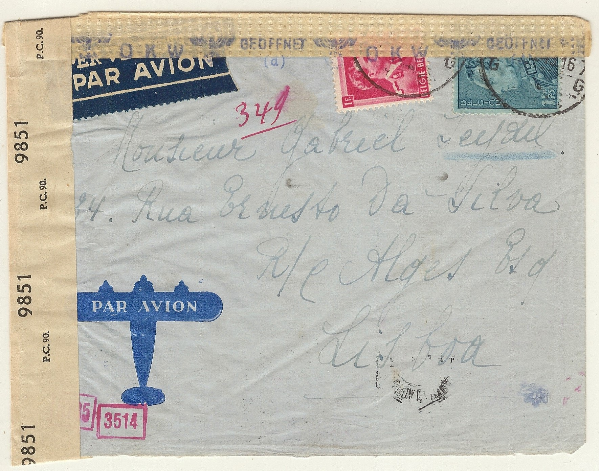
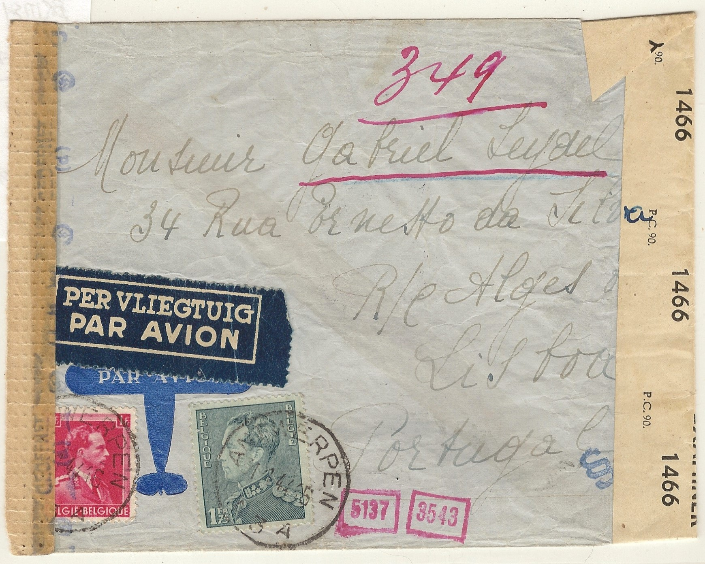
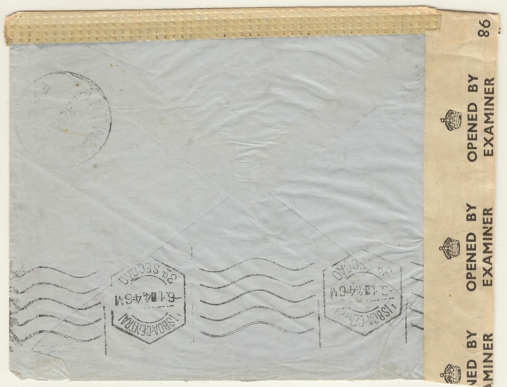
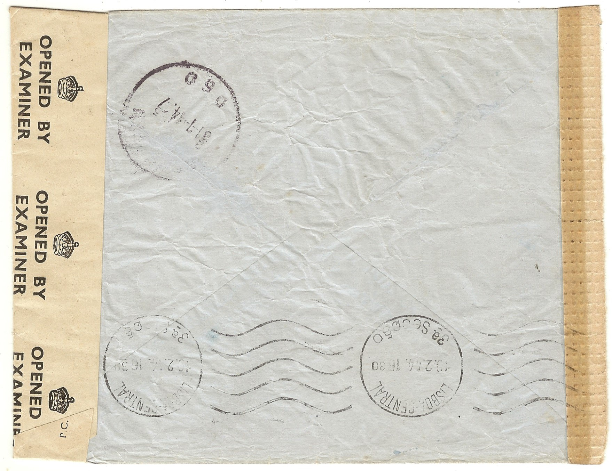
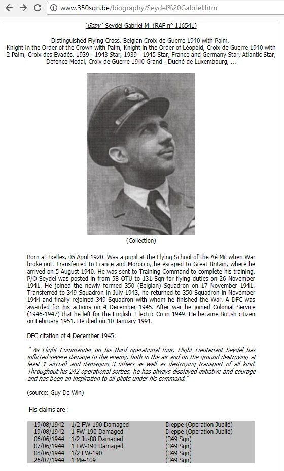

by Ed Fraser, Military Postal History Society
This article was created by Ed Fraser of the Military Postal History Society, and his sole property. The article describes the discovery of a new undercover address used in Lisbon, Portugal during the Second World War. Illustrations of postal history items provide insight into this subject. This article is offered to the general public and members of the MPHS for educational purposes.
This story was first reported in the Autumn 2017 "Belgapost" quarterly of the Belgian Philatelic Study Circle in the U.K. As perhaps an instructive example of how after 75 years such an address can be identified in today's partly-digitized world, and in hopes further information may be uncovered, here is a re-telling of it.
The two covers, front and back, shown in Figures 1 and 2 , are an interesting study in several ways. As examples of mail from German occupied Belgium to neutral Portugal, both have the routine Munich office censor tape, indicated by the "d" on the tape. That was the German censor office that mail to Portugal was typically censored at. However, on top of German censor tape or markings, and the Lisbon arrival cancel, is a British P.C. 90 censor tape. Those tapes have censor numbers on them believed to have been in the U.K.

Front of Cover #1

Front of Cover #2
Two covers from Belgium to the same addressee, with German censorship, and British censorship after reaching Lisbon. Top cover stamps' date and place covered by German censor tape, but backstamped Antwerpen (the German for Antwerp) 21 Dec 1943 and Lisbon 6 Jan 1944. Bottom cover stamp canceled Antwerpen but date seems unclear – possibly 1 Feb 1944 (?), but backstamped (in Belgium?) 31 Jan 1944 and Lisbon 19 Feb 1944.

Back of Cover #1

Back of Cover #2
The backs of the 2 covers in Figure 1 . No sender or return address indicated.
Might this have been some private arrangement with a friend in Portugal to forward correspondence between Belgium and the U.K.? The clues to that are pretty good. There is no listing for the address 34 Rua Ernesto da Silva in a Lisbon suburb in the reference "Undercover Addresses of WWII – Third Edition" by Charles Entwistle, and he confirmed that in a recent e-mail. There is nothing unusual about the building currently at that address which appears to possibly be the home and location of a plumbing and electrical service person, without any signage in Google map/street photos.
And then there is a bit of "education" in European penmanship here. What is the addressee's name? First noting between the 2 covers, apparently by the same hand, the "L" in Lisbon. It is very suggestive of a name Gabriel "Leydel". The "a" and "d" in "da Silva" of the address explain the "odd looking" letter "d" in "Leydel" – not the penmanship strokes used in the U.S, but consistent and neat in any case...and a European style sometimes seen elsewhere. However, while a common enough name in a Google search, but not with clear Belgian ties, that went nowhere. Trying again, and looking at the strokes of that "L" of "Lisbon" seemed quite convincing that it was not exactly a match to the name, but rather to the "S" in the street name "da Silva". The amazing result was, via Google, the Belgian ties of one quite noteworthy WWII RAF pilot, one Gabriel "Seydel".
One thing I liked about these two covers was that the name was underlined – for example in red, and also in red was an added number "349", and the "349" was on both covers. This had suggested to me a strong possibility of the forwarder in Portugal working off a card file or notebook of addresses for mail forwarding, and this addressee was number "349". Recently I had written an article for the Scandinavian Collectors Club "Posthorn" magazine (May 2016, cover and pages 13-19) about such a card file used by the Norwegian Embassy in Lisbon for mail routing between Occupied Norway and many escaped Norwegians especially one's tied to the Government in Exile – and the Embassy person who oversaw this effort frequently used various residential addresses in hopes of not attracting German censorship attention. Maybe the Belgians did something similar? That was the thought.
Anyway, back to our addressee Gabriel Seydel. The first result was 100% in French, and with a lot of military abbreviations that meant nothing to me. It was clear there might be a link, though. Refining that search now produced a fascinating biography, and even a photo! That information is shown below . And the key item -- the greatest key assuming it was put on the cover at the time of its original handling -- is that number 349, and being on both covers! That turns out to apparently have been used to direct the addressee's mail to his RAF Squadron of Belgian Volunteers, Squadron 349! As an aside, our addressee bounced between Squadron 350 and 349 during the war years, but the mail sorter here had it right for the time of these letter mailings.

Biography of Gabriel Seydel
Above, a biographical piece about Gabriel Seydel from the website http://www.350sqn.be/biography/Seydel%20Gabriel.htm The website is dedicated to information about RAF Squadron 350 and those who served in it at any time during the war -- which he did for a time.
So, as a likely hypothesis, it would seem there is a good case for this address in Lisbon being one for mail handling between Belgian RAF military and Belgium -- or perhaps elsewhere in Occupied Europe as well.
Any further information or detail greatly appreciated. My collecting focus is on undercover mail, including that involving the Thomas Cook & Son wartime civilian undercover mail scheme.
edfraser@gmail.com
Belgian Philatelic Study Circle (background)
German Occupation (background)